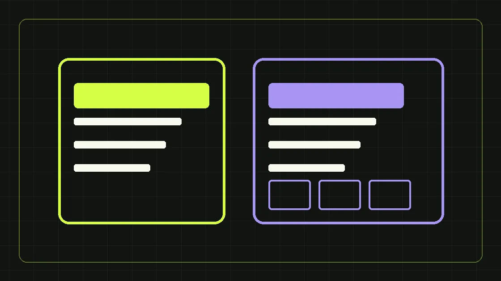

Сравниваем две архитектуры с точки зрения продаж, SEO и масштабирования.
Когда подходит лендинг
Лендинг хорош для одного продукта, ограниченного числа возражений и конкретного источника трафика. На нём проще сфокусировать пользователя на одном действии и быстро тестировать формулировки. Но сложный B2B-продукт часто требует большого количества аргументов, кейсов и спецификаций.
Когда нужен многостраничный сайт
Если у компании несколько продуктовых направлений, отраслей или поисковых кластеров, логичнее строить полноценную структуру. Для каждой группы запросов можно подготовить релевантную страницу, а полезные статьи будут привлекать информационный спрос и вести на услуги.
Что важнее дизайна
На обоих форматах нужны быстрое мобильное отображение, убедительный оффер, понятный CTA, реальные кейсы, информация о компании, доступные контакты и корректная аналитика. Тип сайта сам по себе не гарантирует конверсию.
Можно ли совместить
Да. Корпоративный сайт может содержать посадочные страницы для рекламных кампаний, а отдельные лендинги — ссылаться на основные разделы для дополнительного доверия. Главное — не создавать конкурирующие страницы под один и тот же поисковый запрос.
Короткий ответ
Составьте карту продукта, намерений аудитории и доступного контента. Если цель одна — начните с сильной посадочной. Если строите устойчивый поток спроса по нескольким направлениям — проектируйте многостраничную архитектуру.
Начните выбор не с дизайна, а со сценария покупки
В B2B решение почти никогда не сводится к кнопке «оставить заявку». Покупатель изучает технические характеристики, проверяет юридические данные, сравнивает поставщиков, отправляет предложение руководителю и возвращается на сайт несколько раз. Поэтому лендинг или многостраничный сайт нужно оценивать по тому, сколько вопросов должен закрыть интерфейс. Для одного типового продукта и понятного объявления часто достаточно одной посадочной с ясным предложением, условиями, кейсами и формой. Если компания продаёт несколько разных решений с отдельными критериями выбора, одна универсальная страница перегружается. Разница важна и для маркетинга: рекламные кампании ведут людей с готовым спросом, а SEO-продвижение должно давать разные ответы на разные запросы. Создание структуры начинается с карты потребностей, а не с выбора модного шаблона.
Лендинг: преимущества, ограничения и подходящие задачи
Лендинг — страница, сосредоточенная на одном предложении и главном целевом действии. Его легче быстро подготовить для отдельной рекламной кампании, продуктового теста, мероприятия или нового региона. Можно менять последовательность блоков, заголовки и формы, не затрагивая большой корпоративный сайт. Но у посадочной есть границы: многочисленные продукты, отрасли, тарифы и информационные темы тяжело раскрыть без потери фокуса. Если посетителю нужно сравнить характеристики нескольких производственных линий, изучить документацию и увидеть условия сервиса, единственного экрана с формой недостаточно. SEO по десяткам разных кластеров на одной странице также затруднено. При этом сильный лендинг может стать одной из страниц многостраничного сайта — модели не исключают друг друга.
Многостраничный сайт: зачем он B2B-компании
Полноценная структура позволяет разделить коммерческие намерения: кто-то ищет разработку корпоративного сайта, другой — CRM-маркетинг, третий — настройку рекламы. Для каждого продукта создаются собственные аргументы, FAQ, кейсы, цена и CTA. Раздел «О компании» закрывает вопросы доверия, блог объясняет сложные технологии, а кейсы показывают способ решения задач. Такая архитектура удобна и для продажи нескольких услуг существующему клиенту. Но многостраничник требует редакторской дисциплины. Если создать двадцать почти одинаковых страниц только ради формальных ключей, получится дублированный контент и конкуренция URL. Поэтому сначала формируют кластеры запросов, а затем определяют, какие темы действительно заслуживают отдельной страницы.
Как выбрать структуру по семантическому ядру
Возьмите таблицу запросов и объедините формулировки по намерению пользователя. «Создание сайта под ключ», «разработка сайта под ключ» и «заказать сайт» могут входить в один коммерческий кластер. «Лендинг или сайт что выбрать» относится к информационному вопросу и обычно лучше раскрывается статьёй с переходом на страницу услуги. «Стоимость разработки лендинга» может потребовать отдельного ценового раздела, если аудитория ожидает конкретики. Для каждого кластера назначьте один основной URL и наиболее подходящий тип контента. Затем проверьте текущие страницы: нет ли уже материала, закрывающего тот же вопрос. Именно так можно сделать сайт достаточно подробным, но избежать лишней иерархии. Для Expert Team выбран принцип семи продуктовых страниц и тематического блога — это организационное решение, а не универсальная модель для всех компаний.
Что должно быть на B2B-лендинге
Первый экран обязан быстро объяснять, что именно продаётся, для кого и какое следующее действие ожидается. После него обычно полезны описание проблемы, решение, критерии выбора, реальные подтверждения опыта, этапы работы, условия и ответы на возражения. Усложнять страницу декоративной анимацией ради впечатления рискованно, если она мешает читать или замедляет загрузку. Для сложного оборудования или профессиональных услуг полезны таблицы характеристик, сравнение вариантов и возможность запросить техническую консультацию. Контактная форма должна спрашивать только необходимые данные, а цель её отправки — быть корректно настроенной в аналитике. Если компания работает с холодным трафиком, особенно важно показать признаки надёжности: реквизиты, понятный процесс, условия общения и настоящие кейсы без вымышленных результатов.
Какие разделы нужны корпоративному сайту
Типовая B2B-структура содержит главную с позиционированием, продуктовые страницы, портфолио, описание компании, цены или принципы расчёта, контакты и информационный раздел. Если компания специализируется на нескольких отраслях, их можно раскрывать внутри продуктовых страниц или в экспертных статьях — выбор зависит от реального различия предложений и интента запросов. Для каждой страницы определите задачу, аудиторию, основной запрос и целевой переход. Например, статья о выборе рекламного канала должна помогать читателю принять решение и ссылаться на услугу настройки рекламы. А коммерческая страница должна давать информацию о работах, процессе, стоимости и способе связаться. Не превращайте все страницы в одинаковые лендинги с повторяющимся текстом.
SEO: почему больше страниц не равно больше трафика
Поисковая система оценивает не количество URL само по себе, а полезность и релевантность содержания, доступность страниц и множество других сигналов. Дополнительные страницы нужны там, где пользователь задаёт существенно другой вопрос. Если на нескольких URL повторены одинаковые абзацы с заменой названия города, возникает риск каннибализации и плохого пользовательского опыта. Наоборот, одна огромная страница может плохо отвечать на несколько несовместимых намерений. Решение — кластеризация семантики, понятные заголовки, внутренняя перелинковка и уникальные полезные ответы. Добавляйте новые URL только при наличии отдельной потребности, подтверждаемого содержания и плана поддержки. Блог может охватывать нишевые вопросы без раздувания списка коммерческих посадочных.
Скорость, мобильность и доступность важны в обоих форматах
Лендинг может быть медленным из-за тяжёлого видео; многостраничный сайт — быстрым, если правильно сделаны шаблоны и изображения. Поэтому нельзя считать формат показателем технического качества. Проверьте размеры изображений, загрузку шрифтов, адаптивность форм и навигации, состояние ошибок 404 и отсутствие скачков макета. На смартфоне форма должна быть удобной, текст — читабельным, а кнопки — достаточно крупными для нажатия. Для поиска важны правильные URL, исходный HTML критического контента и метатеги на каждой странице. Для аналитики важнее корректная отправка события, чем визуальный эффект кнопки. Проводите техническую проверку на реальных устройствах, а не только в дизайнерском макете.
Когда стоит делать сайт плюс отдельные посадочные
Комбинированная модель нужна, когда корпоративная структура уже служит информационным центром, но часть рекламных кампаний требует другого сценария. Например, на сайте есть общая страница создания сайтов, а для конкретного вебинара или ограниченного предложения запускают отдельную посадочную. Её цель — не дублировать основную коммерческую страницу по всему тексту, а сфокусировать аудиторию и измерить особую гипотезу. Если посадочная временная и не должна конкурировать в поиске, это учитывают при индексации и канонических URL. Не направляйте поисковых посетителей на пустой рекламный экран, когда им нужны подробности. И не скрывайте от рекламного трафика важную информацию о компании ради искусственного повышения отправок формы.
Как оценить стоимость проекта до разработки
Уточните число уникальных шаблонов, необходимость CMS, интеграций с CRM и аналитикой, объём SEO-текстов, количество языков, дизайн-систему и требования к скорости. Для лендинга большая часть бюджета может уйти на исследования, копирайтинг и продуманную конверсионную структуру, а не на количество блоков. Для многостраничника добавляются информационная архитектура, редакторские процессы, шаблоны статей и управление переадресациями. При сравнении смет просите не только общую стоимость, но и список результатов: какие страницы будут запущены, какие формы работают, кто подготовит тексты, кто настроит хостинг и кто исправляет ошибки после публикации. Слишком дешёвое предложение может просто не включать важные задачи.
Пример решения для B2B-производителя
Представим условного поставщика производственного оборудования с тремя категориями продукции. Покупателям нужны характеристики, документация, условия доставки и сервис. В такой ситуации разумно начать с многостраничного сайта: отдельные продуктовые разделы, страница о компании, кейсы внедрения и контакты. Затем для одной рекламной гипотезы можно создать специальную посадочную с акцентом на конкретный запрос и ограниченным набором действий. Этот пример — иллюстрация архитектуры, а не история клиента Expert Team. Чтобы принять решение в реальном проекте, важно проверить ассортимент, доступность технических материалов и возможности редактора сайта. Если товаров мало и цель одна, сложная структура может оказаться ненужной.
Частые вопросы при выборе
Можно ли продвигать лендинг в поиске? Да, при условии полезного контента и технической доступности, но широкий набор разных запросов ему труднее раскрыть. Многостраничный сайт всегда дороже? Не обязательно: стоимость зависит от дизайна, функциональности и контента. Нужна ли CMS? Если материалы будут регулярно меняться, удобное редактирование снижает зависимость от разработчика. Можно ли начать с лендинга и вырасти? Да, если предусмотреть домен, структуру и возможность переноса контента. Что делать с похожими страницами? Определить их намерения, устранить дубли и настроить правильную перелинковку. Что сильнее влияет на заявки? Соответствие предложения потребности, доверие, удобство контакта и работа продаж.
Итоговое решение
Если у вас один продукт и конкретный источник трафика, сильная посадочная может быть достаточной. Если направлений несколько и важен устойчивый информационный и коммерческий поиск, закладывайте многостраничную систему. Не выбирайте формат по количеству экранов на презентации. Начните с карты запросов, потребностей аудитории и обязательных материалов. Экспертная команда по созданию сайтов поможет подготовить структуру и определить объём разработки; для долгосрочного органического спроса важно сразу учесть SEO-продвижение.
Перед утверждением технического задания попросите будущего редактора, маркетолога и менеджера продаж пройти через схему сайта и описать, какие вопросы клиента остаются без ответа. Если редактор не понимает, где размещать новый материал, архитектура может оказаться слишком сложной. Если менеджер не может отправить клиенту прямую ссылку на нужный продукт, разделы недостаточно конкретны. Если маркетолог не может сопоставить группы запросов с целевыми страницами, будущая SEO-работа будет усложнена. Такие проверки не требуют дорогих инструментов: достаточно списка типовых вопросов, карты страниц и нескольких реальных сценариев покупателя. Результаты зафиксируйте до начала дизайна и разработки, чтобы не переделывать структуру после запуска.
Этот материал находится на согласовании и не индексируется поисковиками, пока редактор не подтвердит факты и источники.
Сделаем план под вашу ситуацию
Обсудим задачи бизнеса и бюджет первых тестов.
Получить маркетинговый план ↗